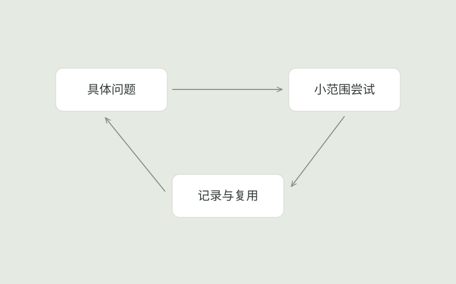
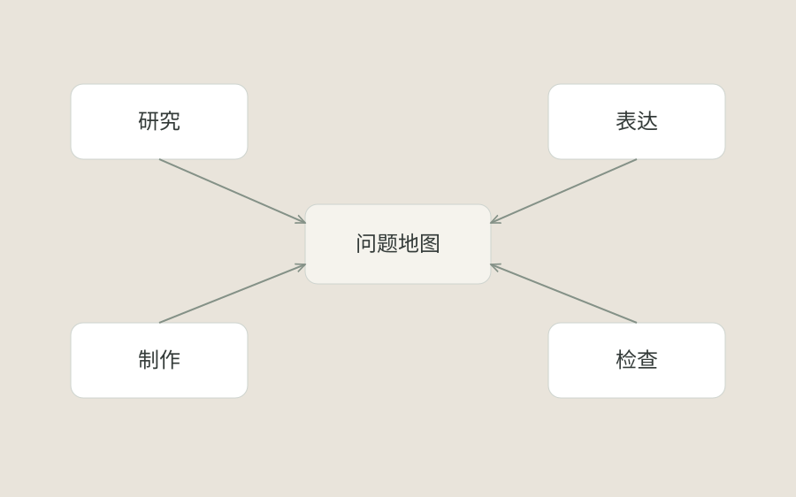
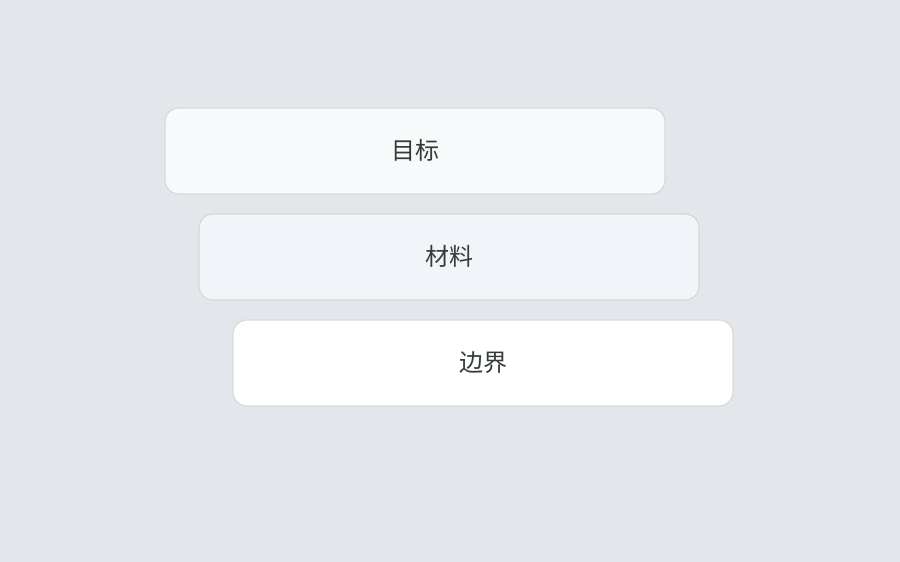
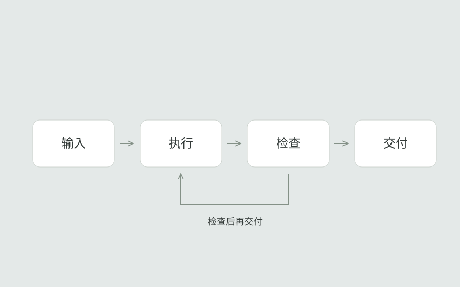
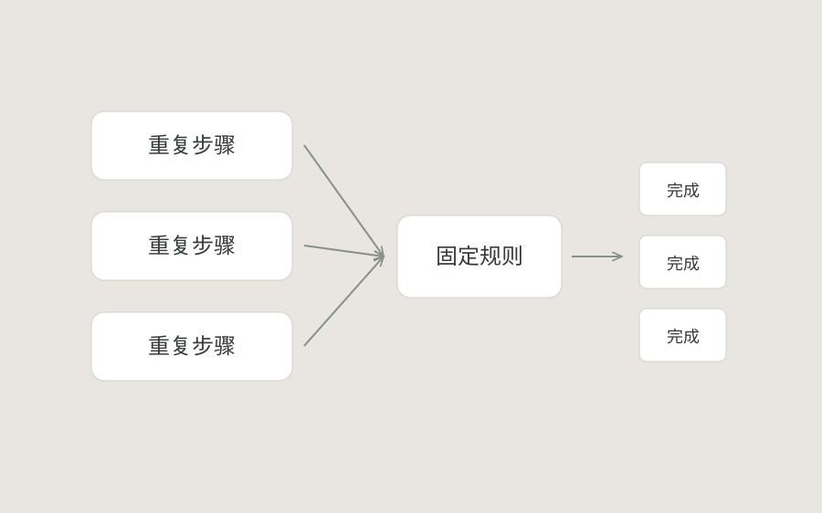
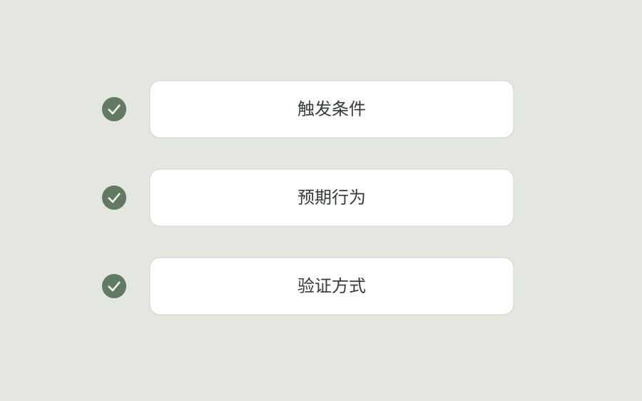
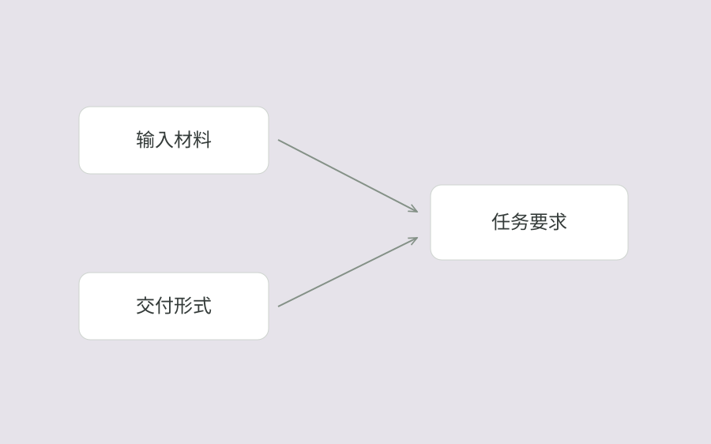

如何建立自己的 AI 学习系统
从一个具体问题出发，记录判断、尝试和结果，让零散探索慢慢长成自己的方法。

先限定一个真实任务，明确输入材料、期望交付和可用时间。任务越具体，越容易判断 AI 的输出是否有用。
围绕同一任务进行小范围尝试，保留采用的上下文、输出样例和修正理由。比较的是交付质量，而不是回答长度。
将有效步骤整理成可以再次执行的清单。下一次处理类似任务时，从已有记录开始，再补充新的边界条件。
返回 AI 探索把目标、上下文和验收条件整理成可重复使用的方法。
从一个具体问题出发，记录判断、尝试和结果，让零散探索慢慢长成自己的方法。

先限定一个真实任务，明确输入材料、期望交付和可用时间。任务越具体，越容易判断 AI 的输出是否有用。
围绕同一任务进行小范围尝试，保留采用的上下文、输出样例和修正理由。比较的是交付质量，而不是回答长度。
将有效步骤整理成可以再次执行的清单。下一次处理类似任务时，从已有记录开始，再补充新的边界条件。
返回 AI 探索先把常见问题分门别类，工具变化时也能判断它究竟解决了哪一段工作。

按照研究、表达、制作和检查梳理常见任务，记录每类任务需要的输入与输出。
再标出耗时、重复或容易出错的环节。让工具对应具体环节，才能看清它带来的实际帮助。
当新工具出现时，使用同一个任务样例进行比较，并记录它适合的场景和限制。
返回 AI 探索说明目标、材料和边界，比寻找万能句式更能让对话稳定地向前推进。

描述希望完成的任务，以及结果交给谁使用。将“做得好看”转成可以理解的要求，例如信息顺序、视觉参考和使用场景。
提供已有材料，区分事实、参考和待确认信息。缺少证据的内容需要标明，避免生成过程把推测当成事实。
写清交付格式与验收条件。根据输出中的具体问题补充上下文，保留有效的修改指令。
返回 AI 探索把每次都要解释的输入、检查和交付拆开，才能看见适合交给 Agent 的环节。

把一次任务拆成输入、执行、检查和交付四个阶段，分别列出需要的材料与完成条件。
将重复步骤写成明确指令，保留对重要判断的人工检查。缺少材料或输出不符合条件时，流程需要停在对应步骤。
交付时同时保留产物与检查记录，让后续执行可以沿用同一套条件。
返回 AI 探索从重复又让人分心的小步骤开始，先验证流程是否真的省下了注意力。

选择一个经常重复且规则稳定的小任务，例如文件命名、图片尺寸整理或固定格式转换。
先用少量样例验证规则，明确异常输入如何处理，并保留原始文件。
确认输出满足要求后再批量执行。对无法判断的例外单独记录，避免静默跳过。
返回 AI 探索把预期行为写成可检查的条件，生成的代码才有明确方向，也更容易一起修正。

围绕用户操作描述行为：什么动作触发变化、页面应如何反馈、什么时候完成。
将需求拆成正常状态、边界情况和恢复路径。用具体例子说明尺寸变化、键盘操作与加载失败时的行为。
依据验收条件检查实际页面。修正时指出触发步骤与预期差异，让修改指令对应可重现的问题。
返回 AI 探索先看任务的输入、风险和交付，再选合适的工具，而不是把热度当作答案。

先说明任务使用的材料、输出形式和允许的操作范围，再判断工具是否覆盖这些需求。
使用相同样例比较候选工具，检查准确性、可编辑程度以及后续修改的成本。
选择能够稳定完成任务的组合，记录已知限制。涉及新需求时，再重新检查是否需要更换工具。
返回 AI 探索